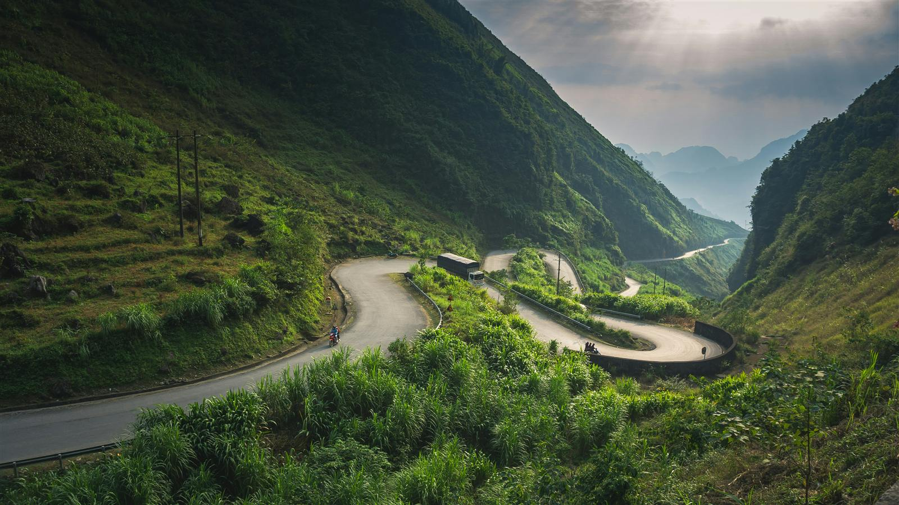

Vietnam: Peaks, Passes & Caves
15 days through towering mountain passes, remote ethnic villages, world-famous caves and lantern-lit ancient towns.
Overview
Discover Vietnam at its most spectacular on this unforgettable 15-day adventure through towering mountain passes, remote ethnic villages, world-famous caves, imperial cities and charming ancient towns. Designed for adventurous travellers who want to experience far more than the typical tourist trail, this journey combines Vietnam's breathtaking natural landscapes with authentic cultural encounters and fascinating history. Travel the legendary Ha Giang Loop, trek deep into Phong Nha-Ke Bang National Park to camp inside the enormous Hang En Cave, explore the wartime history of Central Vietnam, and finish your adventure among the lantern-lit streets of Hoi An. From winding mountain roads and hidden valleys to underground rivers and UNESCO World Heritage Sites, this itinerary showcases Vietnam at its wildest, most authentic and most unforgettable.
Tour Highlights
- Explore Hanoi on an exciting Army Jeep/Motorbike Tour
- Learn the secrets behind Vietnam's famous coffee culture
- Journey through the spectacular Ha Giang Loop
- Cross the legendary Ma Pi Leng Pass
- Cruise along the emerald waters of the Nho Que River
- Meet remote ethnic minority communities in Northern Vietnam
- Travel overnight aboard the comfortable Laman Express sleeper train
- Experience the incredible 2-day Hang En Cave Trek with Oxalis
- Camp inside one of the world's largest natural caves
- Visit the historic Vinh Moc Tunnels and former DMZ
- Discover Vietnam's imperial history in Hue
- Drive across the breathtaking Hai Van Pass
- Visit the towering Lady Buddha overlooking Da Nang
- Explore the magical lantern-lit streets of Hoi An
- Join a traditional Vietnamese cooking class and basket boat experience
Itinerary
Day 1Welcome to Vietnam
Arrive in Hanoi and settle into Vietnam's vibrant capital. Meet your guide and enjoy a welcome dinner introducing you to the country's incredible cuisine and culture.
Day 2Discover Hanoi
Explore Hanoi's bustling streets aboard a vintage Army Jeep before learning the art of Vietnamese coffee making during a hands-on workshop.
Day 3Journey to Ha Giang
Travel north into Vietnam's spectacular mountain frontier and climb aboard your private Army Jeep. Over the next three days you'll explore one of the world's most scenic road journeys, travelling through dramatic mountain passes, remote ethnic villages and breathtaking valleys in complete comfort.
Day 4Ha Giang Loop Adventure
Continue your Army Jeep adventure across some of Vietnam's most spectacular roads. Cross the famous Ma Pi Leng Pass, visit the northernmost point of Vietnam at Lung Cu, and enjoy unforgettable mountain scenery around every bend.
Day 5Nho Que River & Du Gia
Cruise the emerald waters of the Nho Que River before continuing through remote valleys and traditional villages to peaceful Du Gia.
Day 6Sleeper Train to Phong Nha
Return to Hanoi before boarding the comfortable overnight sleeper train south to Dong Hoi, adding another memorable experience to your journey.
Day 7Relax in Phong Nha
Arrive in the peaceful village of Phong Nha and enjoy a leisurely day preparing for the adventure ahead.
Day 8Hang En Cave Expedition
Begin one of Vietnam's greatest trekking adventures. Hike through dense jungle, cross rivers, visit the remote Doong Village, and arrive at the enormous Hang En Cave where you'll camp beneath one of nature's most incredible ceilings.
Day 9Explore Hang En Cave
Continue exploring the immense cave system before trekking back through the national park, celebrating your achievement upon returning to Phong Nha.
Day 10Vietnam's Wartime History
Travel south to Hue, stopping at the remarkable Vinh Moc Tunnels and the former Demilitarized Zone to gain a deeper understanding of Vietnam's history.
Day 11Explore Imperial Hue
Discover the magnificent Imperial City, Thien Mu Pagoda and the rich heritage of Vietnam's last royal dynasty.
Day 12Scenic Journey to Hoi An
Cross the famous Hai Van Pass, visit the towering Lady Buddha before arriving in the enchanting Ancient Town of Hoi An.
Day 13Vietnamese Cooking Experience
Immerse yourself in local culinary traditions with a market visit, hands-on cooking class and basket boat ride through Hoi An's coconut forests.
Day 14Explore Hoi An
Spend the day exploring at your own pace. Wander lantern-lined streets, browse local markets, visit historic temples, or have custom clothing made by Hoi An's famous tailors.
Day 15Farewell Vietnam
Enjoy one final morning before transferring to the airport for your onward journey.
Accommodation
Inclusions & Exclusions
Included
- Vietnam Visa
- Airport arrival and departure transfers
- Accommodation throughout the journey
- Overnight sleeper train experience
- Hang En Cave expedition with Oxalis
- Daily breakfast
- Selected lunches and dinners
- Private transportation
- Professional English-speaking guides
- Entrance fees and sightseeing as listed
- Hanoi Army Jeep Tour
- Vietnamese Coffee Experience
- Ha Giang Loop Adventure
- Nho Que River Boat Trip
- Hang En Cave Trek
- Vinh Moc Tunnels & DMZ Tour
- Hue Imperial City Tour
- Hoi An Cooking Class
- Basket Boat Experience
- Bottled drinking water during transfers
Not Included
- International flights
- Travel and medical insurance
- Drinks and personal refreshments
- Meals not specifically mentioned
- Optional activities
- Personal expenses
- Laundry and minibar charges
- Tips and gratuities
- Early check-in or late check-out
- Services not listed under "Inclusions"
Travel Notes
- Best travel season: September to April
- Excellent fitness is recommended for the Hang En Cave Trek
- Participants should be comfortable hiking over uneven terrain and crossing streams
- Weather conditions vary considerably between Northern and Central Vietnam
- Comfortable trekking shoes are essential
- Comprehensive travel insurance is compulsory
Flexible Travel
This itinerary has been carefully designed for adventurous travellers but can be fully customised to match your interests, fitness level, accommodation preferences, budget and available travel time. Whether you'd like to extend your stay, upgrade accommodation, add extra trekking experiences, or combine this journey with other regions of Vietnam, our team will create a personalised adventure that's perfect for you.